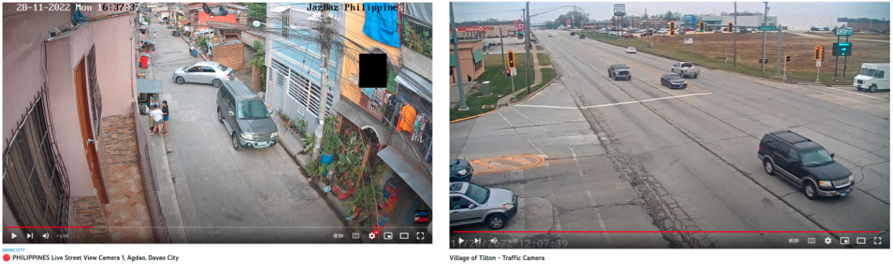
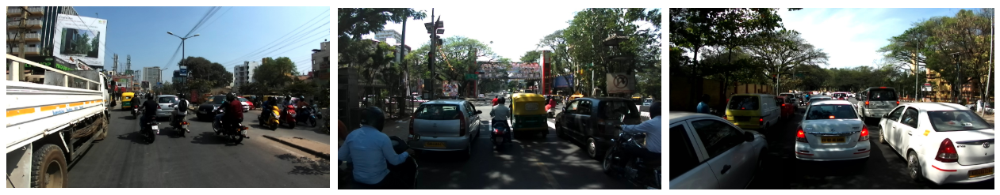

Automatic License Plate Recognition¶
Introduction¶
ALPR/ANPR is an algorithm to recognize the digits of a vehicle number plate using its image. Even though this problem seems a simple optical character recognition task, many traditional solutions fail to achieve good results in real-world conditions as shown below. I developed a custom Deep Learning based solution that not only works with these cases but is also fast enough to deploy on edge devices. I broke down this task into two subtasks, license plate detection, and recognition.
License Plate Detection¶
In the first phase, we need an object detection model which can retrieve the bounding box coordinates of a license plate in the input image.
Dataset Collection¶
Since the challenge was to build this model for real-world images, I needed a dataset that has variations in vehicle type, plate type, location of plate, size, shape, etc. I collected a large number of vehicle images and hand-annotated bounding boxed for license plates. Some of the sources I used for collecting data are listed below,
-
Google images: Vehicle images with visible license plates from google search
-
Youtube videos: A large number of channels live stream traffic or street view camera 24/7 on YouTube. I collected a large number of frames containing vehicles by running a vehicle detection model on it.
 -
OpenSource Datasets: I merged all available open-source plate detection datasets which I found such as Cars, CCPD etc. into a large collection of the labeled dataset.
-
India Driving Dataset: Around 10k Indian street view images captured from a front-facing camera attached to a car.
 -
Active learning: I trained my initial model on all the readily available annotated images. Then use this model to generate labels for unknown images and correct the annotations manually. This way I was able to label a large number of unlabelled images quickly. For active learning, I developed a custom annotation tool using javascript to adjust bounding boxes.